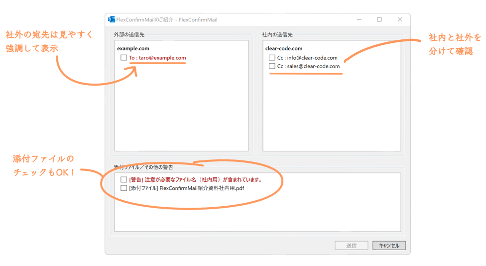
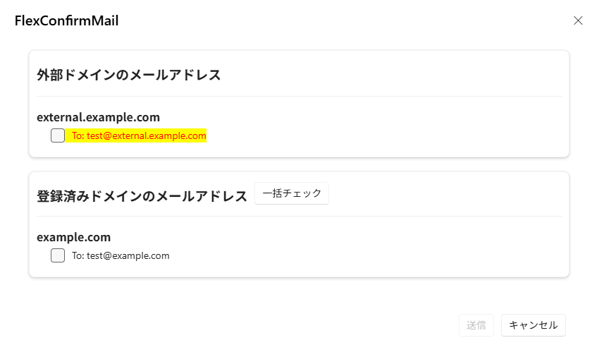
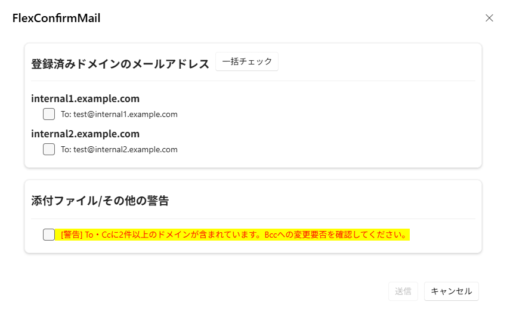

FlexConfirmMail for Outlook#
FlexConfirmMail for Outlookは、メール誤送信対策ソリューションです。 企業における誤送信の事例をもとに、送信前のチェック機能を強化し、誤送信防止策を進化させてきました。 メール運用において大きな課題となる送信ミスの問題の解決に近づけます。
このページは、Outlook向けの情報です。 2014年から提供されているThunderbird向けの情報は FlexConfirmMail :: Thunderbird向けアドオン を参照してください。

紹介動画#
トピックス#
2026-04-09 FlexConfirmMail for Outlook v2.0.0.0をリリース
2025-09-29 FlexConfirmMail for Outlook v1.1.0.0をリリース
詳細を見る
FlexConfirmMail for Outlook v2.0.0.0をリリースしました。
「社外ドメインのTo・CCを強調表示する」機能を追加しました。

「BCCへの変換の警告対象となるドメインの数」を指定する機能を追加しました。

機能改善
設定画面の「このアドオンについて」タブに、「現在の設定をファイルとしてダウンロードする」機能を追加しました。
「To/CCに一定数以上のドメインが含まれている場合に警告する」機能に「BCCへの変換の警告対象となるドメインの数」を追加しました。
「社外ドメインのTo・CCを強調表示する」機能を追加しました。
「未展開の配布リスト、連絡グループが含まれる場合、送信を禁止する」機能を追加しました。
「宛先が社内のみの場合はメール送信前のカウントダウンをスキップをする」機能を追加しました。
「注意が必要なパターンに該当する宛先を「社内ではない」ものとして扱う」機能を追加しました。
「確認ダイアログの確認項目の表示順設定」機能を追加しました。
カスタムメッセージファイルでHTML形式のメッセージを指定できるようになりました。
インストーラー実行時にカスタムCSSを指定することで、確認ダイアログのデザインを変更できるようになりました。
確認ダイアログのリスト項目の間隔を調整しました。
バグ修正
前回のダイアログが何らかの理由で残存してしまった場合に、後続のダイアログの表示の処理が無限ループに陥る場合がある問題を修正しました。
アドインの処理中に例外が発生した場合に、アドインが実行中のままになる場合がある問題を修正しました。
ダイアログの表示に時間がかかった場合に、ダイアログの内容が正しく表示されない問題を修正しました。
未展開の配布リスト、連絡グループが含まれる場合に、メールが送信できない問題を修正しました。
「本文の確認を要求する」機能で、メールの形式がプレーンテキストだった場合に、確認画面の本文の表示が崩れる問題を修正しました。
コンテンツリンク#
|
法人向けのFlexConfirmMail for Outlookサブスクリプションサービスを紹介しています。 |
FlexConfirmMail for Outlookの機能概要をまとめました |